Основные свойства радиоволн.
Характеристики электромагнитных волн
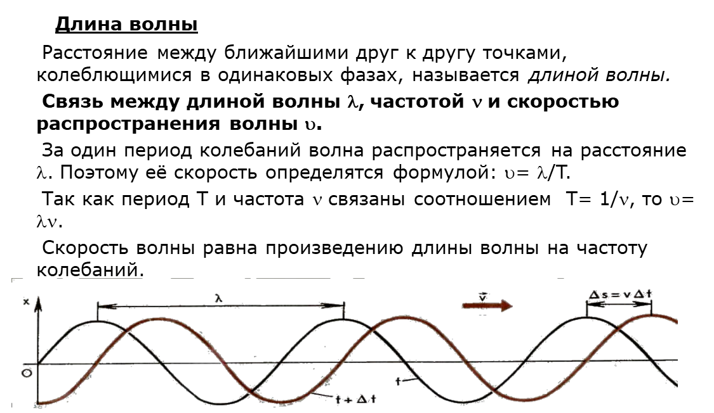
Радиоволны – электромагнитные волны с частотой в
диапазоне 103-1012 Гц и длиной волны 104-10-4м.
Свойства Радиоволн
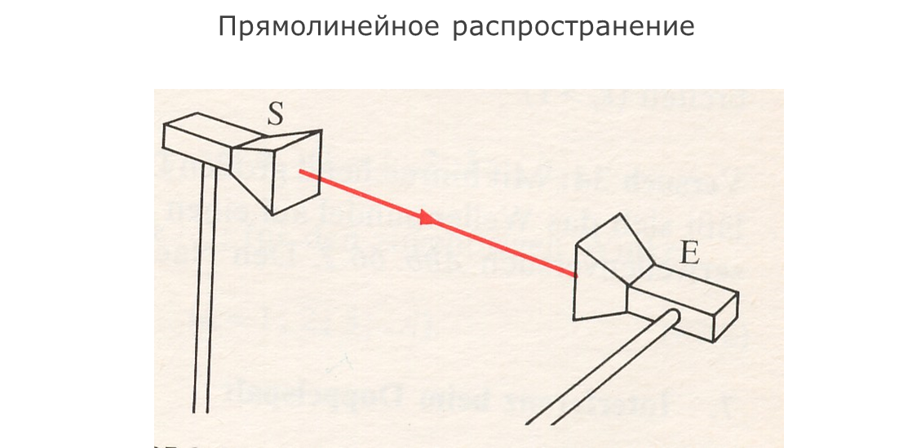
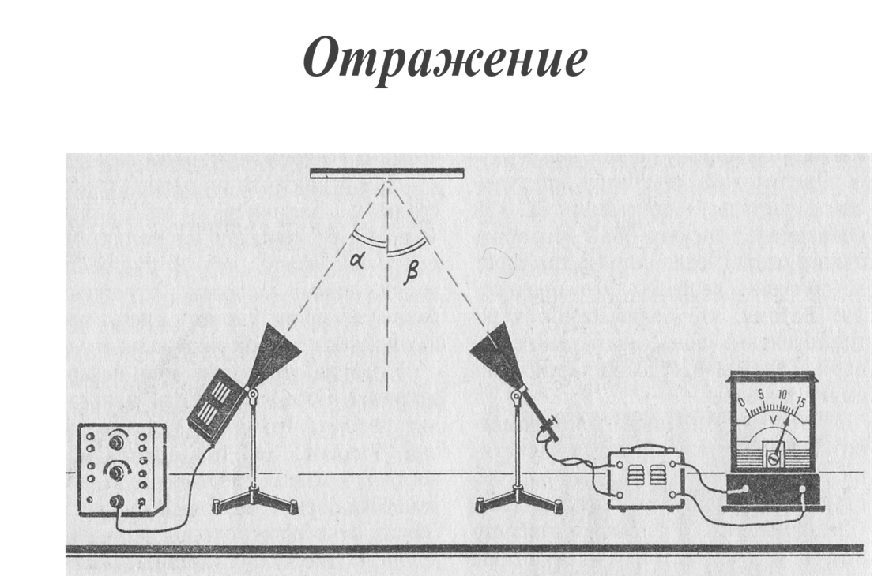
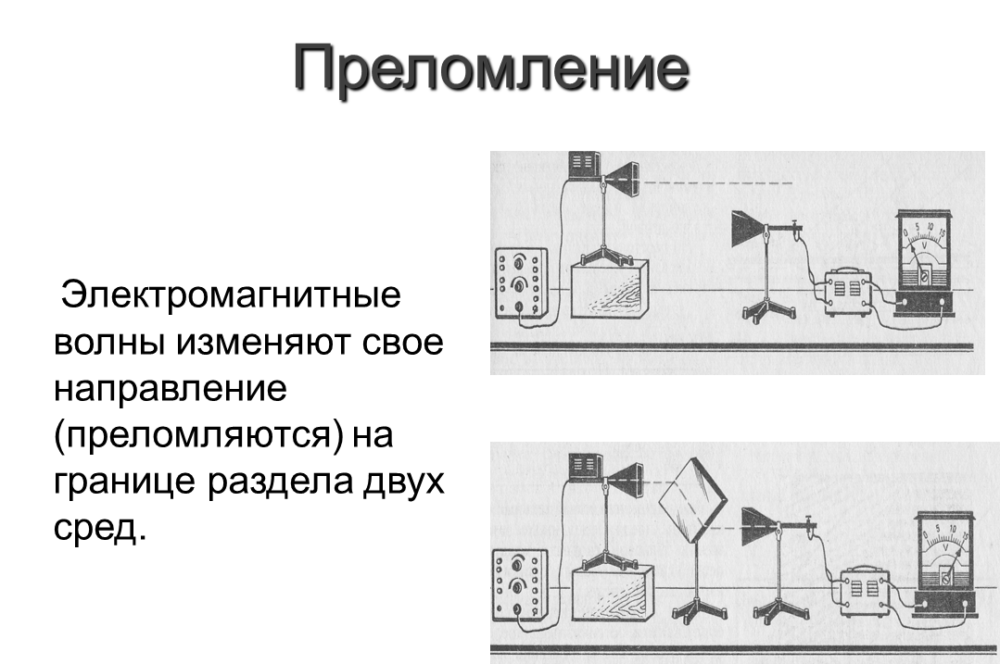
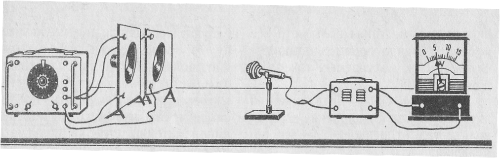
Это явление наблюдается при сложении в пространстве нескольких
волн. В различных точках пространства получается увеличение или уменьшение
амплитуды результирующей волны в зависимости от соотношения фаз складывающихся
волн.
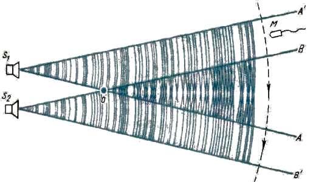
Встречая на своем пути непрозрачное тело, радиоволны огибают его. Дифракция проявляется в разной мере в зависимости от соотношения геометрических размеров препятствия и длины волны.
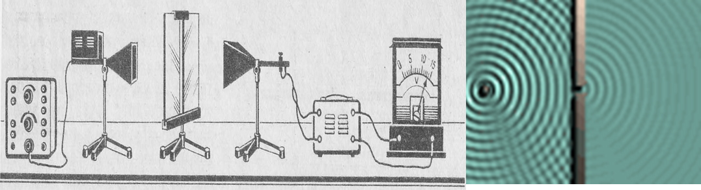
В неоднородных средах,
свойства которых плавно изменяются от точки к точке, радиоволны распространяются
по криволинейным траекториям. Чем резче изменяются свойства среды, тем больше
кривизна траектории.
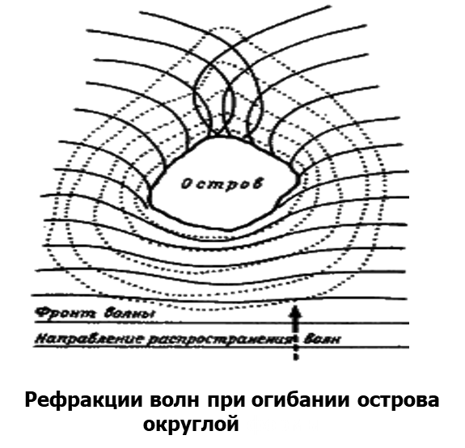
Если при переходе из оптически более плотной среды в менее
плотную, угол падения превышает некоторые критические значения, то луч во вторую
среду не проникает и полностью отражается от границы раздела сред. Критический
угол падения называют углом полного внутреннего отражения.
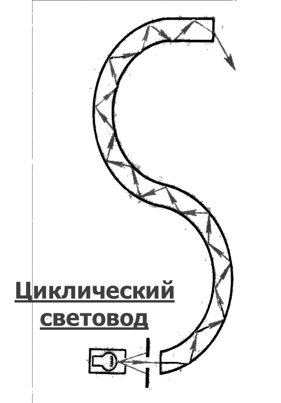
Длинные волны - при распространении огибают встречающиеся на пути препятствия: леса, горы, возвышенности. Но энергия длинных волн в значительной степени поглощается земной поверхностью. Поэтому для осуществления радиосвязи на длинных волнах требуется передатчик большой мощности (мощность радиовещательных станций достигает сотен и даже тысяч киловатт).
Средние волны – распространяются подобно
длинноволновым. Так как частота колебаний волн средневолнового диапазона
значительно выше частоты колебаний волн длинноволнового диапазона, затухание в
диапазоне средних волн сильнее, чем в длинноволновом диапазоне.
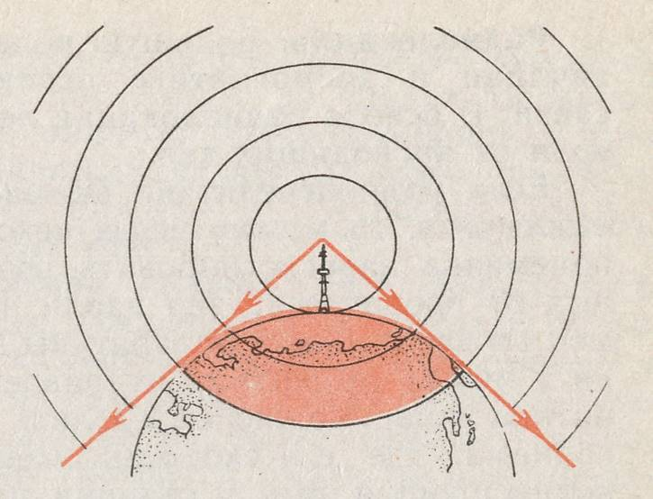
Короткие волны – для коротких волн характерно явление обратного эха – достижение радиоволной приёмника по кратчайшему пути и по наидлиннейшему противоположному пути. Но прямая волна может обогнуть землю даже несколько раз. Это также ухудшает качество радиоприёма. Отражение коротких волн от ионосферы обуславливает существование зон, в пределах которых радиосвязь невозможна. Эти зоны называются зоны молчания (мёртвыми зонами). Зоны молчания – это области между зонами слышимости, в пределах которых наблюдается полное отсутствие приёма коротковолновой передающей станции.
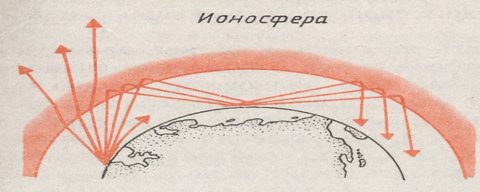
Ультракороткие волны (УКВ) - УКВ не отражаются от
ионосферы. В нижних слоях атмосферы происходит сильное затухание УКВ. Явление
дифракции при радиосвязи на УКВ практически не наблюдается. Поэтому можно
считать, что УКВ вблизи земной поверхности распространяются прямолинейно, т.е. в
пределах прямой видимости. Но под влиянием тропосферы и ионосферы УКВ
распространяются значительно дальше прямой видимости, так как вследствие
неоднородности электрических свойств нижних слоёв атмосферы в них происходит
преломление УКВ в направлении к земной поверхности. Это явление называется
атмосферной рефракцией.